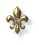
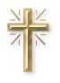

The HOLY SPIRIT gives to JESUS an efficient present time, revealing who HE is. HE places in prominence the greatness of the LORD's Divine Mission and yet, it drives the Redeeming Work so that they appear its fruits in benefit of all the generations. This way, the SPIRIT OF GOD has the great task of impelling the creatures for that can win its difficulties and accomplish its vocation. With this objectify, HE remembers CHRIST'S teachings and it spills gifts on the people, refining the qualities and improving the virtues, vivifying, sanctifying, giving inspiration for the initiatives, and giving disposition and courage for that they can surpass the problems of each day. The SPIRIT also stimulates the charity gives force the people's faith, doing with that it exist justice, fraternity and peace, opening the hope of better days, at the same time that implants and it consolidates the love.
In many occasions, the SPIRIT acts in the contradiction of the events, mainly in the middle of the weak ones and of people intimidated by the injustice and persecutions. It also acts close to the convicts to death, by disease or accident, infusing in them an immense resistance and a limitless hope in the Divine mercy. HE is as a flame that never fades, it stays flickering, in spite of all the difficulties and of the adverse occurrences. HE stays lighting as an invincible, unassailable rampart, giving a trust immortal and it stimulating the wish to win. In the difficulties occasions HE gives forces to react and suggest ideas to transpose the barriers and the obstacles, as well as to console and to comfort the people. Also when they happen the reverses and decadences, the HOLY GHOST opens space in the soul of people, for GOD to occupy a larger dimension, always resulting in great benefit for the faithful, because HE is Love and Communication of Life.
With objective to sanctify the humanity JESUS instituted seven Sacraments. Through Sacraments we receive the HOLY SPIRIT. They are: the Baptism, the Confirmation or Chrismation, Eucharist or Sacred Communion, Penance or Confession, Anointing of the Sick, Holy Order and Matrimony.

By the Sacrament of the Baptism the people receive the HOLY SPIRIT by first time for infusion of water (spilling water in the head or per immersion). The SPIRIT infuses a notable amount sacramental graces that they sanctify the soul of the catechumen: neutralizing the effect of the Original Sin, forgiving the sins committed until that day (case of adults' baptism), placing in the spirit of the person the three Theological Virtues: Faith, Hope and Charity; it grants to him the Christian's identity, member of the Church and participant of CHRIST'S priesthood, besides the sacramental character of GOD's son.
This means to say, that by of the Baptism's Sacrament, the HOLY SPIRIT transforms the "new Christian", in a true "holy person", making him be born again for a new life in GOD:
Truly, truly, I say to you, unless one has been reborn by water and the HOLY SPIRIT, he is not able to enter into the kingdom of GOD. (John 3, 5)
This is the reason because we must to have interest in to baptize our children as soon as possible, for they receive these graces and they can to participate of the Divine life.
Do you not know that those of us who have been baptized in CHRIST JESUS have been baptized into HIS death? For through baptism we have been buried with HIM into death, so that, in the manner that CHRIST rose from the dead, by the glory of the FATHER, so may we also walk in the newness of life. (Romans 6, 3-4)
Resurrected with CHRIST for a new life, the baptized humanity reaches a precious victory against the sin, because will go to dispose of effective instruments to combat it. It means to say, that the baptized humanity is invited to a full life of love in the grace of GOD.
"... For we know this: that our former selves have been crucified together with HIM, so that the body which is of sin may be destroyed, and moreover, so that we may no longer serve sin". (Romans 6, 6)
By the baptism, we began to be part of CHRIST'S Mystic Body, that is, participant of HIS Church, of which HE is the Head; the Sacrament transform us in tabernacle of GOD: of the FATHER, of the SON and of the HOLY SPIRIT, lodging the Three Divine Persons in our heart, offering space for the SPIRIT OF GOD to act marvelously in our existence and to accomplish HIS beneficial mission of implanting in the humanity the graces that they emanate of the heroic Redemption consummated by JESUS, in order to provide us with a true life in GOD: resuscitating us with CHRIST for a new life, sanctifying our body and our spirit, leaving the people with the indispensable graces and charismas to build the human ideals and to collaborate, for that exist life in fullness in the physical body, subject to the temptations, diseases and death.
"Or do you not know that your bodies are the Temple of the HOLY SPIRIT, who is in you, whom you have from GOD, and that you are not your own?". (1 Corinthians 6, 19)
For that reason, it is comprehensible the need of the parentsó and "godfathers", to seek stimulating the growth of the "Baptism's seeds" in the heart of the baptizing, by the own example (in the home, in the work, in the leisure, executing the duties of Christians, frequenting the Church and participating of the religious ceremonies, teaching the children to pray, making them know the admirable and affectionate GOD, that proportionate us the gift of the life).
In the time opportune, the children must to frequent regularly the parochial catechesis, in order of them may to accompany and to follow the teachings of the Church. This way, the Faith will find a fertile land to create root, modeling in each person a true Christian.
Otherwise, the precious seeds of Baptism will die and we go to witness in those that received him, what happens with the pagans: generations and people's generations each time more cold, indifferent and distant of GOD.
There are other Sacraments that they were created by JESUS and also give us the HOLY SPIRIT, but they are used by the Church only when the faithful received the Baptism.

Next Page 